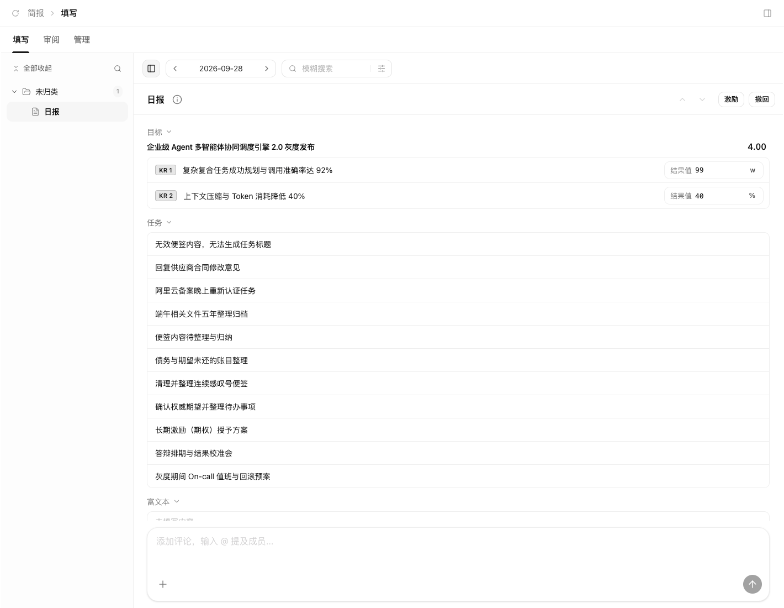
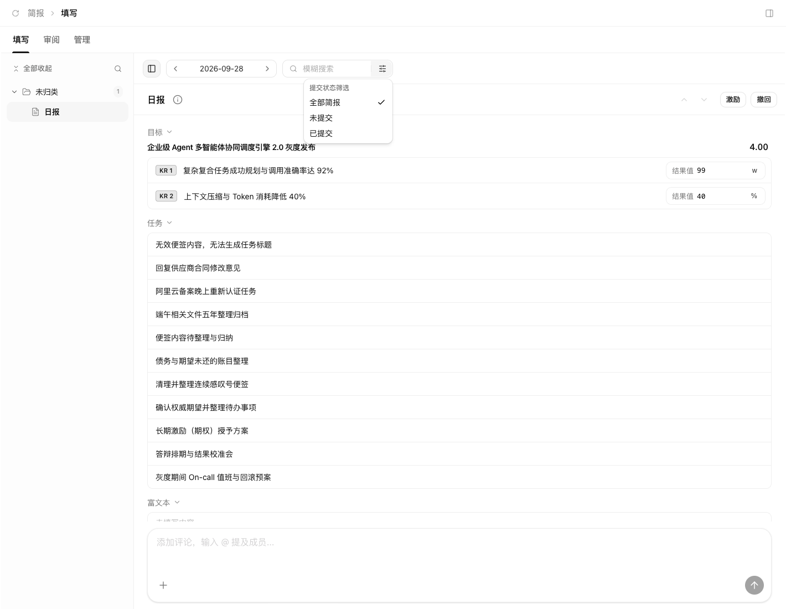
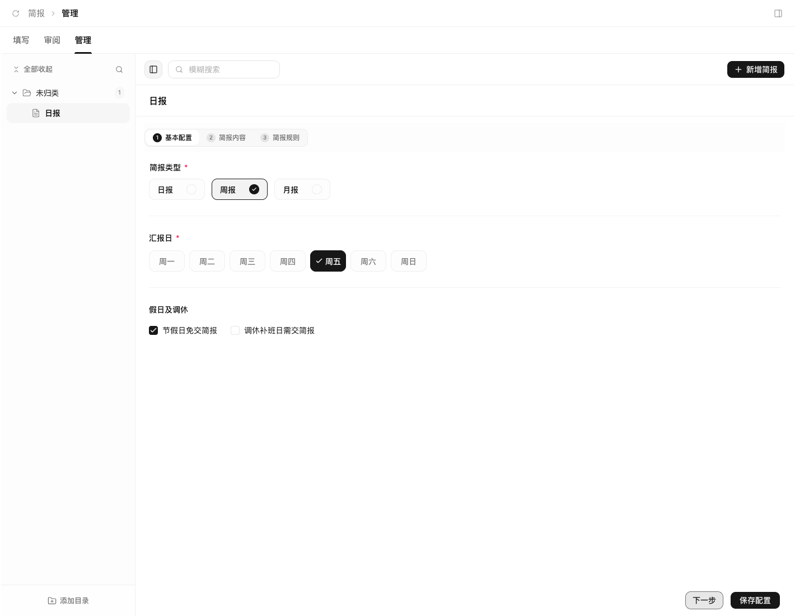
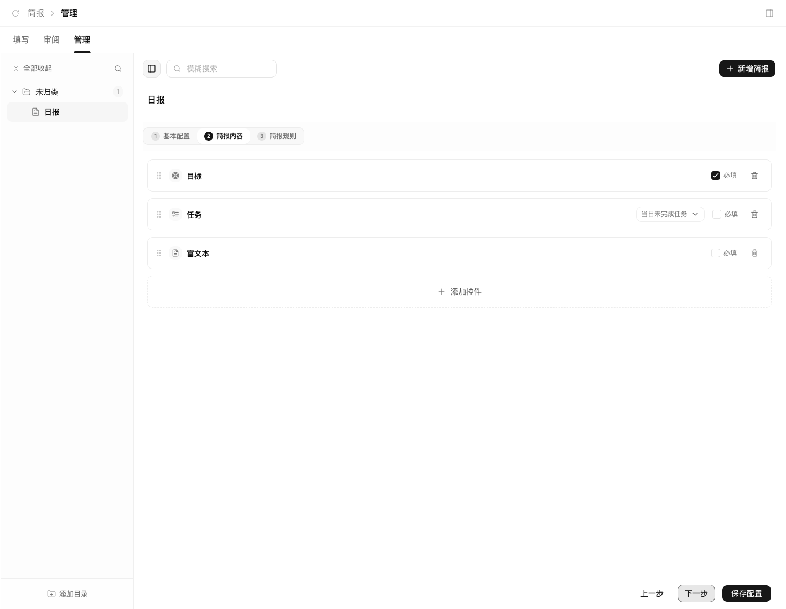
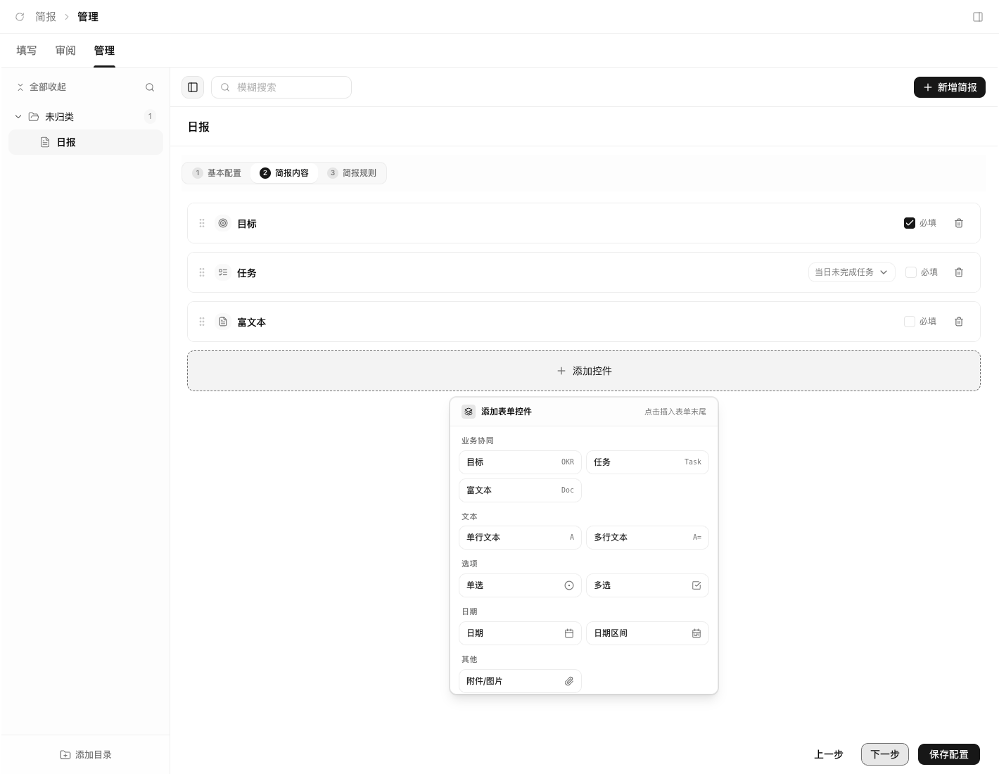
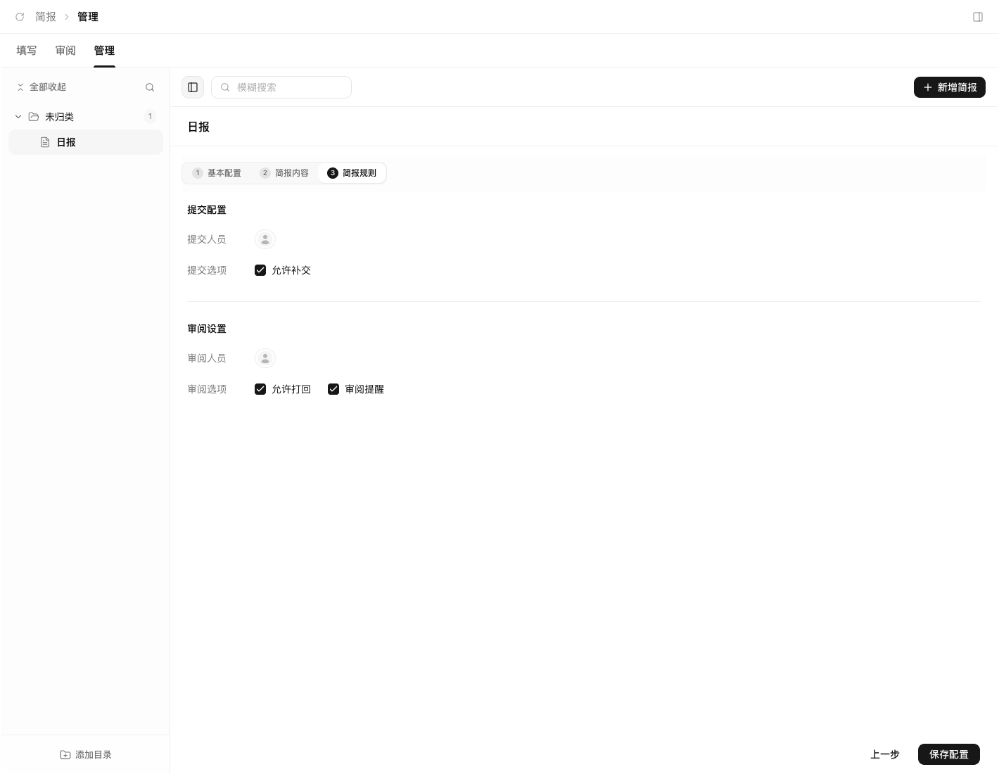
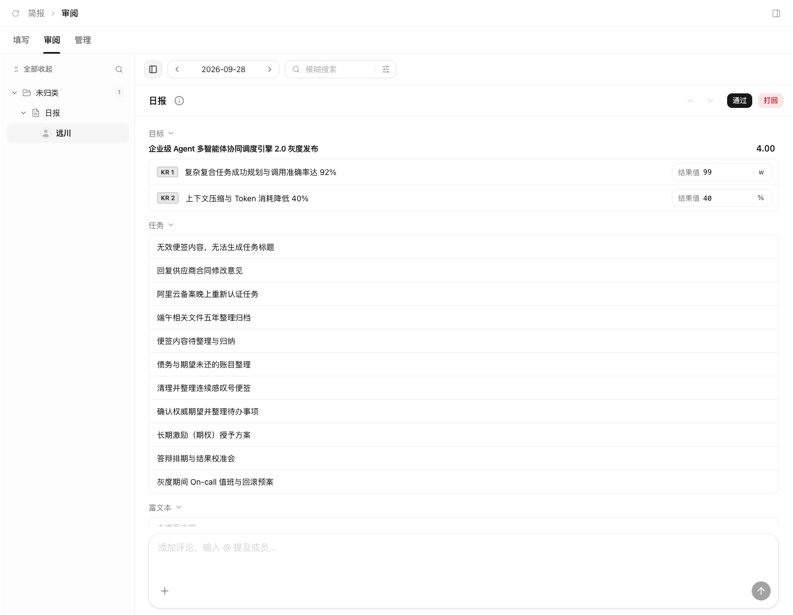
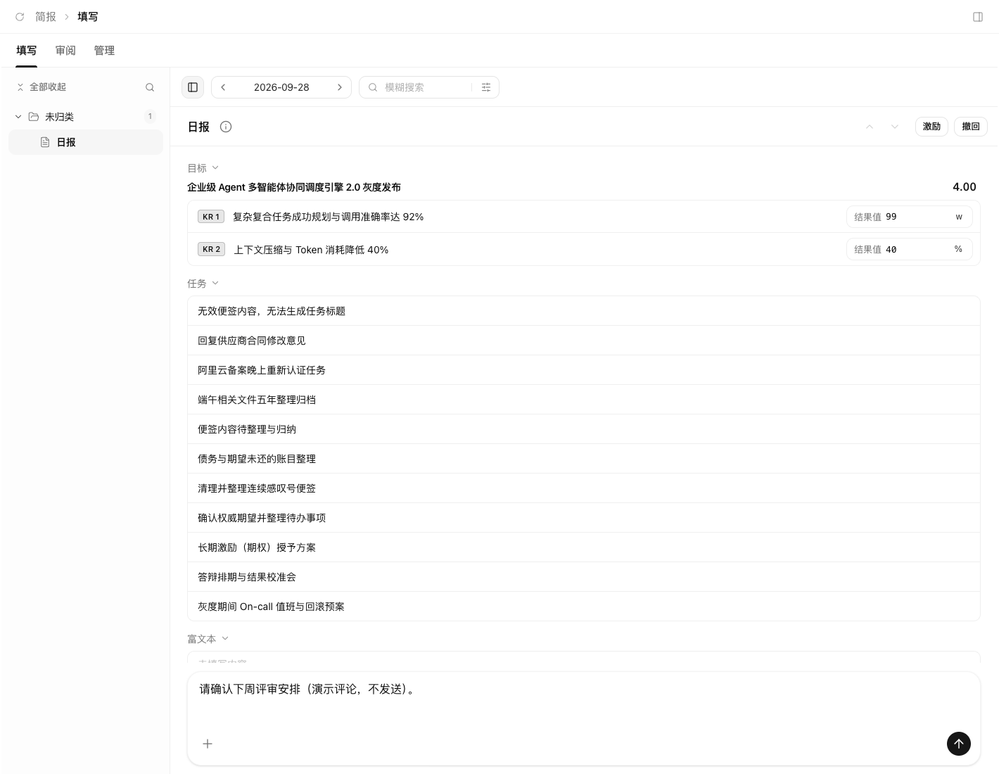

简报模块
产品需求文档 · PRD
AICEO / Teams CEO
版本：V1.0 评审稿 ｜ 日期：2026年10月9日
适用对象：产品、设计、开发、测试
让工作进展自然汇集，让汇报、反馈与改进形成闭环。
本文以当前简报体验为基础，描述产品应达到的完整行为。全文不涉及开发实现方案；“现有能力”表示本次已核对当前产品行为，“目标要求”表示本版建议达到的产品规则。当前缺失及未闭环内容统一列在文档最下方。产品行为核对基于当前实现阅读，本次未进行完整的真人账号及通知端到端验收。
界面截图说明：以下8张图片于2026年10月9日从当前本地系统截取，使用系统现有演示数据，仅展示页面和操作入口。没有执行保存配置、提交、撤回、通过、打回或评论发送。截图不代表所有目标需求已经完成。点击图片可查看原图。
目录
01 产品定位与目标
02 角色、使用场景与边界
03 产品结构与主流程
04 页面与导航
05 模板管理
06 内容控件
07 简报填写
08 目标、任务与用时
09 得分与激励
10 周期与提交规则
11 状态与审阅
12 沟通与通知
13 目录与删除
14 异常及体验要求
15 页面操作与交互说明
16 产品验收清单
17 当前功能缺失与未闭环清单
01 产品定位与目标
1.1 产品定位
简报是连接员工工作进展、目标达成情况与管理反馈的周期性汇报工具。员工基于统一模板查看关联目标和任务，补充结果、风险与计划；审阅人查看每位成员的提交内容并反馈；管理人配置模板、人员和汇报规则。
简报需要减少重复填写，同时保留员工对工作成果、困难和下一步行动的解释空间。自动关联的工作事实与员工补充的主观说明应能被清楚区分。
1.2 用户问题与产品目标
| 用户问题 | 产品目标 | 用户能够感知的结果 |
|---|---|---|
| 每次都要重复整理目标与任务 | 自动关联可用的工作信息 | 打开简报后已有相关目标和任务 |
| 汇报格式不一致，难以横向查看 | 按团队配置统一模板 | 同一模板下字段、顺序和必填要求一致 |
| 不知道是否提交成功、是否被审阅 | 提供清楚的状态与记录 | 能辨认未提交、待审阅、已通过、被打回 |
| 被打回后不知道如何修改 | 将原因与待改内容关联 | 能找到反馈并修改后重新提交 |
| 历史简报随着模板或目标变化而失真 | 保留每次提交时的内容 | 查看历史时仍能看到当时的结果 |
| 提醒、补交与节假日规则不清楚 | 将周期和截止规则真正执行 | 知道何时应交、何时可补交、何时免交 |
1.3 成功衡量建议
以下指标用于后续产品评估，不代表当前已有统计看板，也不在缺少基线时承诺具体数值。
| 指标 | 口径 | 观察目的 |
|---|---|---|
| 按时提交率 | 截止前提交人数 ÷ 本周期应交人数 | 判断汇报机制是否有效运行 |
| 填写耗时 | 打开可填写内容至成功提交的有效填写时间 | 判断是否减少重复录入 |
| 审阅完成率 | 已完成审阅份数 ÷ 已提交份数 | 判断反馈是否及时 |
| 首次通过率 | 首次提交即通过份数 ÷ 首次提交份数 | 判断模板说明是否清晰 |
| 打回闭环率 | 已重新提交并通过份数 ÷ 被打回份数 | 判断反馈能否转化为改进 |
| 草稿恢复成功率 | 成功恢复的草稿次数 ÷ 有草稿的恢复次数 | 判断填写可靠性 |
02 角色、使用场景与边界
2.1 角色分工
同一成员可以同时是提交人和审阅人，权限按具体模板分配，不应由页面名称或固定人员身份决定。
| 角色 | 核心任务 | 应具备的产品权限 |
|---|---|---|
| 提交人 | 填写本人简报、提交、根据反馈修改 | 查看被指派的模板及本人各周期内容；管理本人草稿和附件 |
| 审阅人 | 查看被指派简报的成员提交并反馈 | 查看授权范围内的提交；通过、按规则打回、撤销本人审阅 |
| 模板管理人 | 配置团队汇报方式 | 管理授权范围内的目录、模板、内容和人员规则 |
| 系统管理人 | 配置账号、组织和通知渠道 | 分配管理权限，维护组织信息与系统级规则 |
目标要求：未经授权的成员，即使拿到简报或附件链接，也不能查看、修改或审阅其内容。当前角色控制仍需补齐，详见末章。
2.2 典型场景
员工填写周报。 进入填写页，选中本周简报，查看关联目标和本期任务，补充结果与风险，确认后提交。提交成功后内容只读，并显示待审阅状态。
主管连续审阅。 进入审阅页，定位待审阅成员，查看其提交快照，给出结果。通过后进入下一条，打回时说明需要补充的内容。
管理人调整模板。 在管理页编辑基本配置、简报内容和简报规则，确认保存。新规则对后续周期生效，历史提交保持原样。
员工处理打回。 从通知或填写页进入被打回简报，查看原因，修改内容并再次提交；每次提交与审阅都应能追溯。
2.3 本版范围
本版重点：日报、周报、月报；目录与模板管理；十种已开放内容控件；填写、提交、撤回、审阅、打回；关联目标和任务；附件；草稿、周期、权限和通知的闭环要求。
后续扩展：季度简报、专项简报、数字与金额等更多控件、完整富文本、统计看板、汇总卡片、AI辅助总结、真实奖罚结算。当前页面没有开放的能力，不按已上线功能描述。
03 产品结构与主流程
3.1 信息结构
简报分为三个主要入口：填写、审阅、管理。当前不展示统计入口。
| 入口 | 目录结构 | 主内容 | 主要操作 |
|---|---|---|---|
| 填写 | 目录 → 本人可填写的简报 | 当前简报内容 | 填写、提交、撤回、查看反馈 |
| 审阅 | 目录 → 简报 → 提交成员 | 所选成员的提交内容 | 通过、打回、撤销审阅 |
| 管理 | 目录 → 简报模板 | 模板的三步配置 | 新增、编辑、保存、移动和删除 |
当前以左侧目录和主区详情呈现。本文不将表格排序、批量操作等未出现在当前入口的能力列为已可用功能。
3.2 主业务流程
管理人配置模板与人员 → 按规则形成当期应交简报 → 提交人填写并保存草稿 → 校验并提交 → 审阅人查看提交内容 → 通过，或打回后修改重提 → 保留当期最终结果和全过程记录。
其中“按周期形成应交简报”“可靠草稿”“全过程记录”“通知送达”是完整产品流程的目标，当前尚未全部闭环。
3.3 三个关键区分
- 模板与当期简报： 模板定义怎么填；当期简报承载谁在什么周期填了什么。
- 草稿与已提交内容： 草稿允许修改；已提交内容是审阅依据，不能随关联目标变化而自动改变。
- 目标得分与审阅意见： 目标得分来自结果值；审阅意见来自管理反馈，两者不能混为同一结果。
04 页面与导航
4.1 通用布局

顶部为填写/审阅/管理入口，左侧选择简报，主区展示目标与任务；当前记录已提交，右上显示激励和撤回。对应 INT01、INT04、INT11、INT49、INT50。
页面由顶部页签、工具栏、左侧目录、主区内容和沟通区组成。没有选中简报时展示简洁引导，不展示无关的空表单。
主区标题行保留简报名称，右侧集中放置主要动作。填写页已有提交/撤回和激励入口；审阅页已有通过/已审阅和打回入口。管理页按基本配置、简报内容、简报规则切换。
4.2 搜索与筛选

点击搜索框右侧筛选图标，打开全部简报、未提交、已提交菜单。对应 INT07—INT09。
| 场景 | 搜索范围 | 状态筛选 |
|---|---|---|
| 填写 | 简报名称、部门 | 全部、未提交、已提交；草稿属于未提交 |
| 审阅 | 简报名称、提交人姓名 | 全部、待审批、已通过、已驳回 |
| 管理 | 模板名称、部门 | 当前以搜索为主 |
| 目录搜索 | 简报目录名称 | 不替代正文搜索 |
现有行为：切换入口时状态筛选恢复全部，搜索词保留；清空关键词不应清空其他筛选。填写、审阅目录只显示当前范围内有可见简报的分支；管理允许保留空目录。
目标要求：填写页增加“被打回”可识别状态，防止员工把需要修改的简报误认为无需处理；正文统一使用“审阅”，兼容现有“待审批/已驳回”文案后逐步统一。
4.3 日期导航
填写和审阅展示日期导航，管理不展示。目标要求：选择日期应切换该日期所属的日报、周报或月报周期，并同步更新目录数量和主区内容。
同一周内不同日期应指向同一份周报，同一月内指向同一份月报。无记录时展示该周期的空状态，不得保留上一周期内容造成误认。当前日期导航尚未驱动实际周期数据切换。
4.4 连续查看
填写和审阅支持上一条、下一条及上下方向键。顺序应与当前搜索、筛选和目录范围一致；首尾按钮不可用。输入文字、操作下拉菜单或处理弹窗时，方向键保持原本用途。
处理中禁止重复操作和切换。切换简报需要保留未完成内容；当前只保证同一次详情导航中的临时保留，目标要求是离开或刷新后仍可恢复。
05 模板管理
5.1 新增与保存
管理页新增简报后进入配置详情，依次设置基本配置、简报内容、简报规则。可以来回切换步骤，未保存内容保留；只有明确保存成功才展示成功反馈。
目标要求：新增中的未完成模板应标记为配置草稿，不向员工发起填写。完成标题、周期、至少一个内容控件、提交人及审阅人设置后，才可启用。当前没有完整的启用/停用流程。
5.2 基本配置

在管理页的基本配置中选择日报/周报/月报、汇报日及节假日规则；下一步与保存配置位于右下。截图中模板名称为“日报”，实际类型选择为周报。对应 INT17、INT19、INT22—INT26。
| 项目 | 产品规则 |
|---|---|
| 模板名称 | 必填，去除首尾空格；全空白视为未填 |
| 简报类型 | 当前开放日报、周报、月报 |
| 日报汇报日 | 周一至周日多选，至少一天；支持工作日/全周快捷选择 |
| 周报汇报日 | 周一至周日单选 |
| 月报汇报日 | 月初第一天、月末最后一天或自定义日期 |
| 月报29—31日 | 当月没有指定日期时，目标规则按当月最后一天执行 |
| 节假日 | 可配置法定节假日免交 |
| 调休 | 可配置调休工作日仍需提交 |
| 所属目录 | 可移动到已存在且有管理权限的目录 |
| 部门信息 | 应来自实际组织信息，不应固定为示例部门 |
截止时间应可明确配置并显示给提交人，不能只以“每周五18:00”一类示例文字替代真实截止规则。
5.3 简报内容

字段按顺序排列，卡片提供拖动区域、必填和移除入口；任务右侧可设置范围，下方添加控件。对应 INT35—INT40。

点击底部添加控件，弹出十种当前可添加控件；选择后插入表单末尾。本次仅打开浮层，未新增或保存控件。对应 INT33、INT34。
管理人可以添加、移除控件，编辑标题，设置必填，拖动调整顺序，配置单选/多选选项及任务范围。拖动时提供落点提示，取消拖动不改变原顺序。
目标要求：提供字段说明与提示文字的编辑入口；空标题、重复或空白选项、空模板应提示修正。移除字段时说明对未提交内容的影响；已提交内容继续按原快照显示。
5.4 简报规则

提交配置中设置提交人和允许补交，审阅设置中设置审阅人、允许打回及审阅提醒；保存配置位于右下。对应 INT27—INT31。
| 配置 | 产品含义 | 必须对应的行为 |
|---|---|---|
| 提交人员 | 谁在当期应交简报 | 填写入口和应交名单一致 |
| 允许补交 | 截止后能否提交 | 截止后允许补交或明确禁止 |
| 审阅人员 | 谁可以审阅 | 仅指定人员可查看并处理授权内容 |
| 允许打回 | 是否开放修改后重提流程 | 关闭后不能打回 |
| 审阅提醒 | 是否提醒审阅人处理 | 成员提交后按设置提醒，避免重复打扰 |
目标规则：多个审阅人采用“任一人完成审阅即可结束本轮”的单层审阅模式，记录实际处理人；其他人已打开的内容应提示结果变化，不能覆盖已完成结果。会签、多级审批列入后续范围。
5.5 模板变更的生效范围
本版建议：周期规则、人员和字段结构默认从下一周期生效；当前已生成周期保留原规则。需要调整当前周期时，提供明确的“应用到当期”选项，并说明受影响人数。
历史已提交内容始终保持当时快照。撤回或打回后的修改仍基于该次提交的字段结构，避免新增必填项突然阻断重提；新模板应用到新周期。
上述周期级生效与版本策略为目标要求，当前仅部分提交快照行为已存在。
06 内容控件
当前可添加十种控件，标题和排列由模板决定。类型名称“富文本”当前对应多行文本输入，不能据此承诺格式编辑工具。
| 控件 | 填写体验 | 必填及格式规则 |
|---|---|---|
| 目标 | 选择本人目标，展示关键结果并填写本期结果值 | 必填时必须有关键结果，且每项有结果值 |
| 任务 | 展示本期已完成/未完成任务，或填写计划任务 | 必填时至少一条非空任务标题 |
| 富文本 | 当前为多行文本，支持自动增高和手动调高 | 必填时内容不能为空白 |
| 单行文本 | 短文字输入 | 必填时不能为空白 |
| 多行文本 | 说明、风险、计划等内容 | 必填时不能为空白 |
| 单选 | 从模板选项中选一项，当前以下拉呈现 | 必填时必须选有效选项 |
| 多选 | 从模板选项中选择多项 | 必填时至少一项，不能保留失效选项 |
| 日期 | 选择单一有效日期 | 必填时必须选择，非法日期不可提交 |
| 日期区间 | 选择开始和结束日期 | 不能只填一端，结束不能早于开始 |
| 附件/图片 | 上传、粘贴图片、预览或下载；编辑态可移除 | 必填时至少一个上传成功的附件 |
目标、任务、说明类字段可以折叠。必填标识应清楚但克制；字段有错误时应定位到对应字段，不能仅给一条难以追踪的全局提示。
07 简报填写
7.1 打开简报
进入本人被分配的简报，显示该周期状态、截止信息和模板内容。已有草稿优先恢复；没有内容时初始化可关联的目标与任务，其余字段留给用户填写。
来源加载失败时保留已填写内容，提示缺失部分并允许重试。目标要求：可选信息加载失败不永久阻断其他有效内容的提交；必填关联内容缺失时明确说明需要处理的项目。
7.2 草稿
目标要求：输入后自动保存，并提供可见的“保存中、已保存、保存失败”状态。建议停止输入约2秒后保存；刷新、关闭、切换简报和重新登录后可恢复最近一次成功保存内容。
保存失败时保留当前输入并提供重试。尚未保存而离开时提示用户；不得在没有成功保存的情况下显示“已自动同步草稿”。草稿不要求满足提交必填条件。
7.3 提交
点击提交后按顺序检查：内容是否可提交、附件是否上传完成、模板是否有效、必填及格式是否符合规则、当期是否允许提交。
| 结果 | 用户反馈 | 内容状态 |
|---|---|---|
| 校验不通过 | 显示具体字段及原因，定位到错误 | 保留输入，可修改 |
| 提交处理中 | 主按钮禁用并显示处理中 | 不允许重复提交或切换 |
| 提交成功 | 明确显示已提交、待审阅与提交时间 | 内容只读 |
| 提交失败 | 说明未提交成功，提供重试 | 保留全部输入与附件 |
成功提交时保留当时字段顺序、标题、关联目标、关键结果值、任务和附件。关联对象之后修改，不得自动改变这次提交的审阅内容。
7.4 撤回与重新提交
现有行为：已提交内容支持撤回，撤回保留填写内容并回到草稿，同时清除本次审阅结果。
目标规则：待审阅时允许本人撤回；已通过后的撤回应二次确认并说明会使审阅失效，同时通知原审阅人。每次撤回都保留记录。被打回后直接进入可编辑状态，再提交后重新进入待审阅，并清除旧的当前审阅结果；历史反馈继续保留。
超过截止时间后的撤回重提遵循补交规则：不允许补交时，在撤回确认中明确说明重提受限，避免用户失去已提交结果。
7.5 附件
现有能力：单个附件不超过20 MB（实际大小限制为20 MiB），一份简报全部附件字段合计最多20个；上传完成后才可提交。图片支持预览，其他文件可下载。
目标要求：各附件字段共享总数量提示，上传失败可重试；未完成上传不能算入已成功附件。移除草稿中的附件不应误删已提交版本引用的文件。附件访问遵循简报权限，链接不得绕过授权。
08 目标、任务与用时
8.1 目标关联
现有能力：读取本人负责的可用目标；多个目标时在目标标题行提供选择，单目标或只读状态不出现多余选择入口。展示关键结果及门槛、目标、挑战和当前结果。
填写结果值当前仅作为简报内容，不自动回写目标模块。目标要求：明确标识这是“本次汇报结果”，避免误认为修改了目标原始数据。目标选择范围应同时符合本人权限和汇报周期；没有目标时显示真实空状态，不填入示例目标。
8.2 本期任务
现有能力：读取本人作为负责人或执行人的任务，按已完成/未完成范围展示；重复任务只显示一次，不能在简报里直接改变原任务状态。
当前周期判断：已完成任务使用最近更新时间，未完成任务优先使用截止日期、其次开始日期；未完成且没有日期的任务也可能进入结果。这些属于当前行为，不能等同于精确的“本期完成记录”。
目标规则：已完成任务按实际完成时间归入周期；未完成任务按与该周期的有效关联展示，缺少日期的任务单独标识“未排期”。任务重新打开、改名或跨期延期不应改写已提交简报。
8.3 计划任务
计划任务由用户手工新增、修改或移除，用于表达下一步行动。当前保存为简报中的计划条目，不代表已进入正式任务清单。
后续若提供“生成任务”，必须让用户确认标题、负责人、日期和归属，并展示生成结果；重复点击或重提简报不能生成重复任务。该能力当前未闭环。
8.4 任务用时
现有能力：在任务旁展示当前操作人的累计实际用时，包含已结束记录及本人仍在运行的计时，以分钟保留两位；零用时隐藏，不包含其他成员用时。
该数字当前是本人累计用时，不能命名为“本周期用时”，也不代表提交时已冻结的历史数据。目标要求：填写时显示实时参考值，提交时固定本次展示值；审阅历史简报不得因后来继续计时而变动。若新增周期用时，需单独定义跨周期计时的归属。
09 得分与激励
9.1 目标得分
现有规则：每项关键结果的门槛、目标、挑战分别对应1、3、5分；两段区间分别线性计算，最低1分、最高5分。数值越高越好和越低越好均支持，前提是三档数值严格递增或递减。
目标得分取各关键结果得分的等权平均，显示两位小数。没有关键结果、未填写结果或配置无效时，当前按1分处理。
| 情况 | 示例 | 结果 |
|---|---|---|
| 增长指标 | 门槛80、目标100、挑战120，实际90 | 2.00分 |
| 达到目标 | 同上，实际100 | 3.00分 |
| 目标与挑战之间 | 同上，实际110 | 4.00分 |
| 下降指标 | 门槛60、目标50、挑战40，实际45 | 4.00分 |
| 超过挑战 | 增长指标实际130 | 5.00分 |
| 配置异常 | 三档不满足同方向严格递进 | 当前回退1.00分，目标要求标识异常 |
目标要求：缺少有效结果或评分配置时展示“待评分/配置异常”，不把缺失数据直接解释为真实低绩效。得分不等于审阅是否通过。
9.2 激励展示
填写页有已选目标时显示“激励”。同一目标重复选择只计算一次；多个不同目标先取平均得分，再计算激励参考金额。
参考金额 = 5000 × 平均目标得分 ÷ 3 − 5000。
| 平均得分 | 参考金额 |
|---|---|
| 1.00 | −3333.33元 |
| 3.00 | 0.00元 |
| 4.00 | 1666.67元 |
| 5.00 | 3333.33元 |
金额保留两位小数；平均得分达到4分时，点击可触发短暂庆祝动效，并尊重减少动态效果偏好。当前仅展示参考，不形成真实奖罚记录，不代表工资、付款或扣款。
目标要求：文案明确“激励参考金额”；5000元基数和适用规则应由组织确认后再用于正式业务，无有效得分时不给出奖罚结论。
9.3 审阅评价
目标得分为1—5分，现有审阅记录还有独立的默认95分，但当前主页面没有清楚的评分编辑入口。本文不将主管评分列为已完整开放功能。
本版建议通过/打回与意见构成基础审阅；若保留数字评分，应明确范围、依据、是否必填及其与激励的关系，并提供可编辑入口。不得将未输入的默认95分展示为主管主动评价。
10 周期与提交规则
以下为待闭环的目标要求，当前保存周期配置不代表已有自动执行。
10.1 周期定义
统一按组织时区确定周期，默认北京时间。日报按自然日，周报按周一至周日，月报按自然月。汇报日决定何时应交，不改变该简报覆盖的统计周期。
每个模板、每个提交人、每个周期对应独立简报；不同周期不能相互覆盖。切换日期、查看历史或跨月继续填写时，均应能识别当前周期。
10.2 应交名单
应交人数为当期被分配且需要提交的人员，剔除当期明确免交的人员。新增或移除人员默认影响下一周期；对当期调整时说明应交数量和处理范围。离职或停用账号的历史记录仍应保留。
10.3 截止与补交
| 时间与规则 | 期望行为 |
|---|---|
| 截止前 | 允许保存草稿和提交 |
| 截止后，允许补交 | 允许提交，明确标记逾期/补交 |
| 截止后，不允许补交 | 保留草稿，阻止提交并解释原因 |
| 审阅打回 | 建议提供独立修改期限，避免原截止已过而无法重提 |
| 管理人延长截止 | 当期所有受影响人员看到新截止，记录调整原因 |
打回修改期限本版建议按打回时间起24小时处理，不作为已实现规则；正式启用前需确认组织是否采用该默认值。
10.4 节假日与调休
法定节假日免交与调休工作日需交，按实际工作日历执行；两项同时开启时按该日实际工作属性判断。周报或月报汇报日遇免交日时，建议顺延到下一工作日，覆盖周期仍保持原周期，并显示调整后的截止日期。
产品不得只显示勾选项而仍按普通日期催交。月报选择29—31日遇短月时调整到月末，不能跳过当月。
11 状态与审阅
11.1 状态定义
| 状态 | 用户含义 | 是否可编辑 | 主要动作 |
|---|---|---|---|
| 未填写 | 当期尚无有效填写内容 | 是 | 开始填写 |
| 草稿 | 有内容，尚未成功提交 | 是 | 继续填写、提交 |
| 待审阅 | 已成功提交，等待审阅 | 否 | 提交人撤回；审阅人处理 |
| 已通过 | 审阅人已认可本次提交 | 否 | 查看结果；按权限撤回或撤销审阅 |
| 被打回 | 需要补充后重新提交 | 是，仅提交人 | 查看原因、修改、重提 |
“逾期”是提交时效标记，可以与草稿、待审阅等状态同时存在；不能代替业务状态。填写页当前“已提交”汇总口径较粗，目标要求将被打回从已完成任务中清楚区分。
11.2 状态变化
未填写 → 草稿 → 待审阅 → 已通过；待审阅 → 被打回 → 修改 → 待审阅。待审阅/已通过撤回 → 草稿；已通过撤销审阅 → 待审阅。
目标要求：所有动作都必须符合当前状态，不能对已撤回内容继续通过，也不能用迟到的审阅操作覆盖新一轮提交。重复操作应提示当前结果，不创建重复记录。
11.3 通过

左侧选择提交成员，右侧显示提交内容，标题行右侧为通过、打回。本次没有执行这两个操作。对应 INT57—INT59。
审阅人查看提交快照后点击通过，保存处理人、时间和意见。允许不填意见，使用简洁默认文案。成功后进入当前范围下一条；没有下一条时留在当前内容，并明确显示结果。
多个审阅人同时操作时，先成功的处理生效；其他人看到“该简报已由某人处理”，并能刷新查看结果。
11.4 打回
仅在模板允许打回且简报待审阅时开放。目标要求：弹出意见输入，说明具体需要修改的问题，原因必填；不能仅用模糊默认理由完成打回。
成功后通知提交人，显示被打回状态、原因、处理人和时间。失败时显示未打回成功并保留意见。当前允许打回开关及失败反馈未完全约束真实操作。
11.5 撤销审阅
当前已通过的“已审阅”按钮可撤销审阅，恢复待审阅并清除当前结果。目标要求：通过菜单或确认提示明确表达“撤销审阅”，避免误点；保留历史处理记录，通知提交人结果已变更。
本版不包含对打回的直接撤销；如需恢复，可由提交人修改重提，或后续增加明确的管理操作。
12 沟通与通知
12.1 沟通区

评论输入区位于详情底部，左下为附加操作，右下为发送；截图只输入示例评论，未发送，不证明评论已持久保存。对应 INT64、INT65。
填写与审阅详情展示沟通区，管理配置页隐藏。产品应支持评论、按时间排序、成员提及和互动表情，评论必须属于具体成员的具体周期简报。
目标要求：刷新、切换和重新进入后保留真实记录，显示实际作者和时间；评论失败保留文字并可重试。提及人员应具有查看该简报的权限，提及不能自动授予访问权。
当前沟通区包含示例评论，发送及互动尚未形成真实持久化流程。AI相关输入入口也不代表已有真实AI汇报处理能力。
12.2 通知矩阵
| 事件 | 接收人 | 内容与落点 |
|---|---|---|
| 当期开始/待填写提醒 | 应交且未提交成员 | 模板、周期、截止，进入本人填写 |
| 截止临近或逾期 | 未提交且仍应交成员 | 当前状态、是否可补交，避免已交后继续提醒 |
| 成员提交 | 指定审阅人 | 提交人、周期，进入对应提交内容 |
| 审阅通过 | 提交人 | 结果及意见，进入本人简报 |
| 被打回 | 提交人 | 修改原因与重提期限 |
| 撤回/撤销审阅 | 相关提交人或审阅人 | 状态变更原因，进入当前有效内容 |
| 评论中被提及 | 被提及且有权限成员 | 评论上下文，进入对应沟通位置 |
通知应有送达或失败状态并支持必要重试，不能仅弹出“已通知”就认定送达。当前尚无完整提醒和通知闭环。汇总卡片及定时发送列为后续能力。
13 目录与删除
13.1 目录管理
填写和审阅目录只读，管理允许创建目录/子目录、重命名、移动模板和删除。模板与提交成员节点不能按普通目录编辑。移动模板只改变归属，不改变历史简报或人员身份。
空目录可在管理中保留；非管理页面避免显示无可见内容的目录。显示“未归类”时应清楚区分临时归属与普通目录，管理操作成功后保持原有简报关联。
13.2 删除
当前删除简报会同时删除其提交内容；删除目录会删除整个子目录范围、关联简报和提交内容，不能恢复。此行为必须在确认时明确说明，不能写成“仅删除目录”。
目标要求：确认框显示影响的目录、模板及提交记录数量，目录较大时要求再次确认。优先增加“停用/归档”，已有历史记录的模板应保留只读历史；永久删除只对有权限人员开放。回收与附件清理规则仍需补齐。
14 异常及体验要求
| 情况 | 产品期望 |
|---|---|
| 没有被分配的简报 | 展示“暂无需要填写的简报”，不引导无权限用户创建 |
| 筛选无结果 | 说明当前条件无匹配，提供清空条件 |
| 目录无选中项 | 提示选择简报，不展示上一条成员内容 |
| 内容加载失败 | 保留已有输入，提供重试并说明失败范围 |
| 附件失败 | 标识失败文件，保留其他成功附件 |
| 模板被移除或停用 | 说明当前不可继续提交，已保存内容仍可查看 |
| 权限改变 | 停止未授权动作并说明原因，不把他人数据残留在页面 |
| 多窗口同时编辑 | 提示内容已有更新，允许比较或恢复，不能静默覆盖 |
| 网络恢复 | 恢复保存/提交能力，不自动重复已成功动作 |
| 审阅冲突 | 展示实际处理人和最新结果，不覆盖已有审阅 |
视觉要求：正文易读，标题层级清楚；动作集中、色彩克制；只读与可编辑状态保持同一内容结构，避免跳动；长文本自动增高；亮暗模式均可辨认。小屏幕保留主要动作和正文可读性，目录可收起。
无障碍要求：键盘可到达主要操作，按钮具有明确名称，错误不只依赖颜色；庆祝动效尊重减少动态效果偏好。消息反馈不能遮住当前关键输入。
15 页面操作与交互说明
本章供开发和测试逐项核对。位置采用相对页面区域描述；“现有”表示当前已有入口，“补齐”表示本版需要增加或修正的交互。目标交互不等于已上线能力。正式验收以点击后的页面、状态、内容和反馈同时符合规则为准。
15.1 页面区域与操作位置
| 区域 | 位置与内容 | 交互边界 |
|---|---|---|
| 入口页签 | 页面顶部：填写、审阅、管理 | 切换工作场景，统计入口当前隐藏 |
| 目录区 | 页面左侧，目录下为简报；审阅下还有成员 | 展开目录不等于选中简报；管理才可修改目录 |
| 工具栏 | 主区上方：分组、日期、搜索及筛选；管理右侧为新增简报 | 搜索/筛选控制当前可见范围 |
| 详情标题行 | 主区上部：名称、信息图标、上下条导航、主操作 | 填写为激励及提交/撤回；审阅为通过/已审阅及打回 |
| 内容区 | 标题下方，按模板顺序展示字段 | 填写态可编辑，提交及审阅态只读 |
| 沟通区 | 内容下方，输入区位于详情底部 | 不得把评论发送当成简报提交 |
| 管理步骤栏 | 管理详情标题下方：基本配置、简报内容、简报规则 | 切换步骤保留当前配置 |
| 管理底栏 | 管理详情底部：上一步、下一步、保存配置 | 保存配置与切换步骤是不同动作 |
15.2 通用入口、搜索与导航
| 编号 / 入口位置 | 触发动作及条件 | 点击后的页面或内容变化 | 反馈、边界与测试重点 |
|---|---|---|---|
| INT01 顶部“填写”页签 · 现有 | 点击进入本人填写场景 | 目录显示本人可用简报；主区未选中时显示引导 | 状态筛选重置全部，搜索词保留；补齐未保存内容离开保护 |
| INT02 顶部“审阅”页签 · 现有 | 点击进入授权审阅场景 | 目录按简报展开提交成员，点击成员查看内容 | 不显示无审阅权限的内容；页签切换不自动审阅 |
| INT03 顶部“管理”页签 · 现有 | 点击管理；目标规则仅管理人可用 | 显示可编辑目录及新增简报，工具栏隐藏日期 | 普通成员不得因点击页签获得配置权限 |
| INT04 工具栏“分组” · 现有 | 点击，或再次点击 | 收起/展开左侧目录，主区适应可用宽度 | 已选内容及输入保留；不触发提交或保存 |
| INT05 工具栏日期左右箭头 · 部分现有 | 点击前一天/后一天 | 日期前后变化；补齐后加载所属周期内容 | 当前仅日期变化；跨周/月不得沿用上一周期正文 |
| INT06 工具栏日期文字 · 现有入口、数据联动待补齐 | 点击打开日期选择，选择具体日期 | 日期选择层关闭，显示选中日期；目标规则同步周期 | 取消选择不改变日期；同周周报仍是同一期 |
| INT07 工具栏搜索框 · 现有 | 输入当前范围内的简报名称、部门或提交人姓名关键词 | 目录及可选内容按当前入口搜索范围收窄 | 审阅搜索的是提交人姓名；无结果显示搜索空态 |
| INT08 搜索清空入口 · 现有 | 关键词非空时点击清空 | 移除关键词，恢复当前筛选下结果 | 保留状态筛选；不重置日期和当前草稿 |
| INT09 搜索框右侧筛选图标 · 现有 | 填写/审阅中点击 | 打开状态菜单；选择后更新结果和筛选数量 | 管理不显示状态菜单；一次只选择一种状态 |
| INT10 左侧目录展开箭头 · 现有 | 点击有子节点的目录或简报 | 展开/收起下级内容 | 不修改内容；审阅可展开成员，模板不能改成目录 |
| INT11 左侧简报/成员名称 · 现有 | 填写/管理点简报；审阅点成员 | 主区打开对应详情并标记当前选择 | 不显示上一人内容；无权限或已删除时有明确提示 |
| INT12 详情右上“上一条/下一条” · 现有 | 点击箭头，或非输入场景按↑/↓ | 按当前范围切换详情，保留本次导航未提交内容 | 第一条禁用上一条，末条禁用下一条；处理中禁用；可靠保存待补齐 |
| INT13 标题旁信息图标 · 现有 | 已提交内容点击 | 弹出简报类型、目录、提交人、提交时间 | 点击外部关闭；补齐实际时间，不显示固定示例身份 |
15.3 管理页：新增、步骤与保存
| 编号 / 入口位置 | 触发动作及条件 | 点击后的页面或内容变化 | 反馈、边界与测试重点 |
|---|---|---|---|
| INT14 工具栏右侧“新增简报” · 现有 | 管理人点击 | 当前创建默认模板，清空搜索并打开基本配置；名称为“新建工作简报” | 补齐配置草稿不向员工发起填写；创建失败应显示提示，不仅无响应 |
| INT15 管理标题名称输入框 · 现有 | 点击编辑名称，回车结束输入 | 名称在当前配置中更新 | 名称不能为空白；改名未保存时不能声称已生效 |
| INT16 标题下三个步骤页签 · 现有 | 点击基本配置/简报内容/简报规则 | 显示对应配置内容，保留其他步骤输入 | 直接切步骤不能绕过最终完整校验 |
| INT17 底栏“下一步” · 现有 | 基本配置或内容步骤点击 | 基本配置进入内容；内容进入规则 | 名称为空停留并提示；内容校验失败不继续；规则页不显示下一步 |
| INT18 底栏“上一步” · 现有 | 内容或规则步骤点击 | 内容回到基本配置；规则回到内容 | 返回不丢内容，不触发保存；基本配置不显示上一步 |
| INT19 底栏“保存配置” · 现有 | 任意配置步骤点击 | 执行当前保存校验并保存；完整跨步骤校验待补齐；成功后更新目录名称及字段 | 补齐统一跨步骤校验及处理中禁用；失败保留配置并提供重试 |
| INT20 离开未保存配置 · 补齐 | 切页签、选另一模板或关闭页面 | 弹出“配置尚未保存”，提供保存后离开/放弃修改/继续编辑 | 保存失败停留；放弃只放弃未保存修改，不删除模板 |
| INT21 启用/停用入口 · 补齐 | 管理人确认启用或停用 | 启用后参与后续应交生成；停用后不生成新一期 | 配置不完整不能启用；历史内容不删除 |
15.4 管理页：基本配置与规则
| 编号 / 入口位置 | 触发动作及条件 | 点击后的页面或内容变化 | 反馈、边界与测试重点 |
|---|---|---|---|
| INT22 基本配置类型选项 · 现有 | 点击日报/周报/月报 | 切换类型并显示对应汇报日配置 | 切换不应影响历史提交；目标要求说明对后续周期生效 |
| INT23 日报星期选项和快捷选择 · 现有 | 点击星期复选或工作日/全周 | 更新应交星期，已选项具有选中状态 | 最后一个星期不能取消，至少保留一天 |
| INT24 周报星期选项 · 现有 | 点击一个星期 | 替换原选中日 | 保持单选，不出现两个汇报日同时选中 |
| INT25 月报日期选项 · 现有 | 选月初、月末或自定义日期 | 自定义时显示日期选择；选择后展示汇报日 | 29—31日显示短月调整提示；实际执行待补齐 |
| INT26 节假日/调休复选 · 现有配置 | 点击选中或取消 | 当前配置变化，保存后保留设置 | 勾选不是即时免交证明；必须补齐实际日历规则 |
| INT27 规则页“提交人员”成员区 · 现有 | 点击打开“设置提交人员”，选择/取消成员 | 当前提交人名单更新 | 补齐实际账号；至少一位提交人才可启用，修改当期名单需说明范围 |
| INT28 规则页“审阅人员”成员区 · 现有 | 点击打开“设置审阅人员”并调整 | 当前审阅人名单更新 | 至少一位审阅人才可启用；不因成员名字相同而混淆身份 |
| INT29 “允许补交”复选 · 现有配置 | 勾选/取消并保存 | 目标规则决定截止后提交是否可用 | 关闭后逾期提交提示截止原因；当前实际限制待补齐 |
| INT30 “允许打回”复选 · 现有配置 | 勾选/取消并保存 | 目标规则决定审阅页是否提供打回 | 关闭后按钮隐藏且不能通过其他入口打回；当前未闭环 |
| INT31 “审阅提醒”复选 · 现有配置 | 勾选/取消并保存 | 目标规则决定提交后是否向审阅人提醒 | 关闭不发送该类提醒；开启也要验证实际送达 |
| INT32 截止日期与时间 · 补齐 | 设置当期/模板截止规则 | 员工看到实际截止；变更时显示影响范围 | 不沿用固定示例时间；跨周期和节假日调整正确 |
15.5 管理页：内容设计器
| 编号 / 入口位置 | 触发动作及条件 | 点击后的页面或内容变化 | 反馈、边界与测试重点 |
|---|---|---|---|
| INT33 空画布或底部“添加控件” · 现有 | 点击虚线区域 | 打开控件选择浮层 | 空画布和已有字段时均可添加；点击外部关闭且不新增 |
| INT34 控件选择浮层条目 · 现有 | 点击目标、任务或其他已开放类型 | 在内容区末尾增加对应控件并关闭选择层 | 新控件独立，编辑不影响同类型的其他控件 |
| INT35 控件标题编辑区 · 现有 | 输入/修改标题 | 当前字段标题变化，保存配置后生效 | 补齐空标题校验；不能把占位提示当作已填标题 |
| INT36 控件内“必填”开关 · 现有 | 开启/关闭 | 必填标记更新，提交时按该字段要求校验 | 草稿仍可保存；历史提交不被新必填规则改变 |
| INT37 控件移除入口 · 现有 | 点击移除 | 当前设计器移除该控件，其余顺序保持 | 补齐有内容时的影响确认；取消不删除，历史快照保留 |
| INT38 控件卡片可拖动区域 · 现有 | 按住非输入区域拖动，松开 | 显示落点，松开后按落点重排 | Esc或拖出有效范围取消；点击输入、选项按钮不误拖动 |
| INT39 单选/多选的选项编辑区 · 现有 | 在多行选项框编辑，每行一项；增删行以增删选项 | 当前选项列表更新 | 补齐空白/重复选项校验，失效选项不能作为有效填写结果 |
| INT40 任务控件范围配置 · 现有 | 选择本期已完成、未完成或计划任务 | 内容预览对应范围，填写页按此范围呈现 | 计划任务可编辑；本期事实任务只读；不承诺尚未开放的全部任务范围 |
| INT41 字段说明/输入提示设置 · 补齐 | 在控件设置中编辑说明或提示 | 填写页在对应字段展示说明/占位提示 | 当前没有清楚的编辑入口；说明不当成用户填写内容 |
15.6 填写页：字段、提交与撤回
| 编号 / 入口位置 | 触发动作及条件 | 点击后的页面或内容变化 | 反馈、边界与测试重点 |
|---|---|---|---|
| INT42 字段标题折叠入口 · 现有 | 点击可折叠标题 | 折叠/展开对应内容 | 折叠不清空内容；有错误时应自动展开并定位 |
| INT43 目标标题行选择入口 · 现有 | 可编辑且有多个目标时选择 | 更新该控件的目标及关键结果 | 单目标/只读不显示选择；已有结果换目标时补齐覆盖提示 |
| INT44 关键结果结果值输入 · 现有 | 未提交或被打回时输入 | 当前汇报结果更新，目标得分同步变化 | 已提交/审阅态不可编辑；不改变目标模块原始数据 |
| INT45 计划区“添加计划任务”及行末“删除” · 现有 | 计划范围下点击新增或移除 | 新增空计划行或移除该行 | 本期事实任务没有同样编辑动作；必填任务需至少一条非空标题 |
| INT46 多行内容输入区 · 现有 | 输入工作总结、风险或计划 | 文字随输入更新，内容变多时自动增高 | 只读态不可修改；当前不提供加粗等格式按钮 |
| INT47 单选/多选/日期字段 · 现有 | 选择选项或日期 | 对应值更新，取消选择按字段规则处理 | 无效选项、无效日期、区间逆序在提交前定位提示 |
| INT48 标题行右侧“提交” · 现有 | 未填写/草稿/被打回且允许提交 | 校验后提交；成功后只读，按钮变为撤回，审阅侧出现待审阅内容 | 加载/上传/处理中禁用；校验或提交失败保留输入，不假成功 |
| INT49 标题行右侧“撤回” · 现有 | 已提交待审阅或已通过时点击 | 成功后恢复草稿，内容可编辑，按钮变回提交 | 补齐已通过二次确认及逾期重提提醒；失败保持原状态 |
| INT50 标题行右侧“激励” · 现有 | 至少选择一个目标时点击 | 展示按目标均分计算的参考金额；均分≥4时有短暂动效 | 无已选目标不显示；重复目标去重；不生成真实奖罚记录 |
| INT51 草稿状态提示/重试 · 补齐 | 输入后自动保存，失败时点击重试 | 状态在保存中、已保存、保存失败之间真实变化 | “已保存”仅成功后出现；重试不得清空用户输入 |
15.7 填写页：附件
| 编号 / 入口位置 | 触发动作及条件 | 点击后的页面或内容变化 | 反馈、边界与测试重点 |
|---|---|---|---|
| INT52 附件字段“上传附件” · 现有 | 可编辑时点击 | 打开系统文件选择，可多选，确认后开始上传 | 取消选文件不新增；上传显示上传中；达到数量限制不可继续 |
| INT53 附件字段内粘贴 · 现有 | 光标/焦点在附件区，粘贴文件或图片 | 开始上传，成功后加入附件列表 | 非文件内容不新增附件；超限或失败显示该字段错误 |
| INT54 附件缩略图或文件名称 · 现有 | 点击已成功附件 | 图片可预览，其他文件可下载 | 补齐权限；不存在或无权限给出可理解的提示 |
| INT55 附件移除图标 · 现有 | 可编辑且不在上传中 | 从当前草稿附件列表移除 | 提交/审阅只读不显示移除；历史版本引用的附件应保留 |
| INT56 多附件字段合计限制 · 部分现有 | 任一字段新增导致总数超20 | 应在新增前提示总量已满 | 当前保存/提交有总数限制，补齐上传阶段统一计数；不先上传后才发现无法提交 |
15.8 审阅页：通过、打回与撤销
| 编号 / 入口位置 | 触发动作及条件 | 点击后的页面或内容变化 | 反馈、边界与测试重点 |
|---|---|---|---|
| INT57 左侧提交成员节点 · 现有 | 点击某成员 | 展示该成员提交快照，姓名和状态明确 | 不展示其他成员草稿；标题及信息区对应选中成员 |
| INT58 标题行“通过” · 现有 | 授权审阅人处理待审阅内容 | 成功后变为已通过；有下一条自动进入下一条 | 失败保留本条并提示；补齐仅待审阅可操作及多人冲突处理 |
| INT59 标题行“打回” · 现有入口、反馈补齐 | 模板允许且内容待审阅，点击 | 目标交互打开原因输入框，确认后标记被打回 | 当前直接使用默认理由；补齐必填原因，取消不改变状态，失败保留意见 |
| INT60 “已审阅”按钮 · 现有 | 已通过内容点击 | 当前撤销审阅并恢复待审阅 | 补齐先显示撤销确认；仅实际审阅人或授权管理人可执行 |
| INT61 审阅意见编辑入口 · 补齐 | 审阅动作前填写意见 | 意见随当前动作保存，提交人能查看 | 主入口当前没有清楚的编辑区域；不把临时评论代替正式意见 |
| INT62 已处理/已撤回内容 · 补齐 | 他人在当前审阅期间先处理或提交人撤回 | 提示内容状态已变化，刷新最新内容 | 不继续通过旧提交；不把同一份简报处理两次 |
15.9 沟通区：排序、发送与提及
| 编号 / 入口位置 | 触发动作及条件 | 点击后的页面或内容变化 | 反馈、边界与测试重点 |
|---|---|---|---|
| INT63 沟通区排序入口 · 现有 | 切换最新在前/时间顺序 | 评论重新排列 | 不改变作者或内容，不把排序视作新评论 |
| INT64 底部评论输入及发送按钮 · 部分现有 | 输入非空文字后点击发送 | 当前临时加入沟通列表；目标规则成功保存后清空输入 | 空白不可发送；失败保留文字；当前刷新后保留待补齐 |
| INT65 评论输入中的@成员 · 部分现有 | 输入@并选择成员 | 插入成员提及，继续输入正文 | 提及不能授权；真实通知待补齐，不显示未经验证的已通知 |
| INT66 评论下互动表情 · 部分现有 | 点击表情 | 当前互动展示变化；目标规则本人再次点可取消 | 补齐真实人员及刷新保留，不因临时显示认定已保存 |
| INT67 评论里的AI相关选项 · 未闭环 | 提及助手后可能显示相关输入设置 | 仅当前输入交互，不承诺AI已处理简报 | 正式开放前需定义AI生成内容预览和用户确认，不自动改提交结果 |
15.10 目录操作与危险操作确认
| 编号 / 入口位置 | 触发动作及条件 | 点击后的页面或内容变化 | 反馈、边界与测试重点 |
|---|---|---|---|
| INT68 管理目录底部添加入口 · 现有 | 点击添加目录，输入名称并确认 | 左侧出现新目录 | 空名称不创建；失败不保留假成功节点 |
| INT69 管理目录节点菜单 · 现有 | 选择新增子目录或重命名 | 打开对应输入并确认，成功后更新目录 | 填写/审阅无编辑菜单；模板/成员节点不出现目录结构动作 |
| INT70 管理目录删除菜单 · 现有、影响提示补齐 | 点击删除 | 打开确认；确认后当前目录、子目录及关联简报被删除 | 明确不可恢复及影响范围；取消不删除；失败保留原内容 |
| INT71 管理中移动简报到目录 · 现有 | 通过目录拖放等可用归属操作 | 简报出现在目标目录，当前归属更新 | 禁止移入成员节点等非目录；失败恢复原归属，历史内容不改 |
| INT72 删除单个模板 · 能力存在、入口补齐 | 目标入口为管理模板操作菜单“删除” | 显示提交历史影响，确认后移除模板及当前相关内容 | 当前主区无清楚独立删除按钮；不能按旧表格入口验收，建议优先归档 |
15.11 关键交互测试步骤示例
场景一：提交成功。 前提是本人有当期简报且未超过可提交时间。进入填写 → 点击左侧简报 → 输入全部必填项 → 上传附件并等待完成 → 点击标题行提交。预期：处理期间按钮禁用；成功后内容只读、按钮变撤回、显示实际时间；审阅人能看到相同提交内容。刷新后结果一致。
场景二：必填不通过。 前提是模板包含必填目标和必填文本。留空某个结果值 → 点击提交。预期：不进入待审阅，提示具体字段并定位；已填内容和附件保留；补全后可以重新提交。
场景三：打回重提。 审阅人进入对应成员提交 → 点击打回 → 填写修改原因并确认；提交人进入被打回内容 → 查看原因 → 修改后提交。预期：重新进入待审阅，当前旧审阅结果不残留，历史意见可查看；两次提交内容不会互相冒充。
场景四：切换简报与草稿恢复。 在简报A输入未提交内容 → 点击下一条进入B → 返回A → 刷新页面。预期：导航返回及刷新都恢复最近成功保存内容；如果保存失败，在离开前给出提示，不能显示已保存。
场景五：模板修改不影响历史。 员工提交后，管理人改变字段标题、必填和顺序并保存 → 审阅人重新打开该提交。预期：仍显示提交时字段；新一期使用新模板；历史附件、任务结果及用时不因后续操作变化。
场景六：权限与状态冲突。 审阅人A和B同时打开同一条，A先通过，B再打回。预期：B不能覆盖A的结果，收到已被处理提示；没有权限的第三人不能打开该内容或附件。
以上步骤对应目标验收，当前未闭环部分需在补齐后执行完整验证。
16 产品验收清单
以下是完整产品目标的验收条件，不表示当前全部通过。末章逐项列出现有缺口。
| 编号 | 场景 | 验收结果 |
|---|---|---|
| AC01 | 成员进入填写页 | 只显示被分配的模板和本人简报 |
| AC02 | 审阅人进入审阅页 | 只显示授权范围内成员提交 |
| AC03 | 未授权访问简报或附件 | 无法查看或修改内容 |
| AC04 | 新增模板未完成 | 不出现在员工应交清单，提示缺失配置 |
| AC05 | 日报选择提交日 | 至少保留一天，工作日/全周快捷设置正确 |
| AC06 | 月报设置31日，进入2月 | 当期按月末形成应交简报，不跳过该月 |
| AC07 | 调休日与法定假日 | 应交和免交按实际工作属性执行 |
| AC08 | 添加、移除和拖动字段 | 保存后顺序和要求一致，取消拖动不改变顺序 |
| AC09 | 切换配置步骤 | 未保存配置不丢失，失败不显示成功 |
| AC10 | 搜索和状态筛选 | 结果与条件一致，清空搜索保留状态筛选 |
| AC11 | 日期跨周/月切换 | 展示对应周期，旧内容不覆盖新周期 |
| AC12 | 自动保存后刷新 | 恢复最近成功保存的草稿 |
| AC13 | 保存失败后离开 | 提示未保存，保留内容并允许重试 |
| AC14 | 目标或任务加载失败 | 明确失败范围，已有输入不被清空 |
| AC15 | 目标选择与结果填写 | 只选本人可用目标，本次结果不回写原目标 |
| AC16 | 任务周期归属 | 已完成按完成时间，未排期任务有明确标识 |
| AC17 | 附件超限/上传未结束 | 给出限制提示，不允许误提交 |
| AC18 | 日期或选项不合法 | 定位对应字段，修改后可提交 |
| AC19 | 连点提交 | 只产生一次有效提交 |
| AC20 | 提交后原目标/模板变化 | 已提交正文、字段和结果保持当时内容 |
| AC21 | 目标得分计算 | 增长与下降指标均符合1/3/5分分段规则 |
| AC22 | 重复选择同一目标 | 激励均分只计算一次，金额保留两位 |
| AC23 | 任务用时 | 排除他人用时，历史提交不随后续计时增长 |
| AC24 | 截止后补交 | 按允许补交开关处理，补交有清楚标记 |
| AC25 | 待审阅撤回 | 保留内容，恢复草稿，旧审阅操作不可继续生效 |
| AC26 | 已通过撤回 | 二次确认，结果失效记录可追溯 |
| AC27 | 打回开关关闭 | 不允许执行打回 |
| AC28 | 打回与重提 | 原因必填，通知送达，重提进入新一轮待审阅 |
| AC29 | 两人同时审阅 | 先完成的结果生效，另一人看到冲突说明 |
| AC30 | 撤销审阅 | 已通过恢复待审阅，保留处理记录并通知相关人 |
| AC31 | 连续导航 | 顺序遵循当前范围，输入中的方向键不误切换 |
| AC32 | 评论与提及 | 刷新后仍在，归属正确，有权限成员收到通知 |
| AC33 | 删除目录 | 确认中说明子目录和关联简报的影响，权限有效 |
| AC34 | 归档模板 | 不再生成新应交简报，历史仍可查看 |
| AC35 | 真实通知失败 | 不显示虚假成功，提供失败状态与重试 |
| AC36 | 空状态和错误状态 | 内容清楚，无示例人员、日期或评论混入真实记录 |
17 当前功能缺失与未闭环清单
以下为本次核对发现的现状，按产品影响排序。P0为正式使用前必须解决，P1为主流程完整所必需，P2为后续增强。优先级属于本版建议。
17.1 正式使用前必须闭环 · P0
| 编号 | 当前缺失或问题 | 用户影响 | 完成标准 |
|---|---|---|---|
| GAP01 | 真实账号与权限未闭环，仍存在固定操作人；页面可见控制不能保证数据访问安全 | 可能看到或操作不属于自己的简报及附件 | 提交、审阅、管理与附件访问均按真实身份和授权范围约束 |
| GAP02 | 没有独立周期简报与完整历史，同一成员重提会覆盖记录；日期导航不驱动周期查询 | 日报/周报/月报无法形成可信历史，切日可能误认内容 | 每周期独立应交记录；历史可检索，日期切换真实生效 |
| GAP03 | 自动草稿没有可靠保存闭环；当前主要是本次导航的临时内容保留 | 刷新、离开后可能丢失填写内容 | 自动保存、成功/失败反馈、刷新恢复及未保存离开提示全部通过 |
| GAP04 | 审阅状态约束不完整；重提可能残留旧结果，打回规则未完全执行 | 结果可能互相覆盖，被打回内容仍被当成完成 | 操作符合状态和权限，重提清除当前旧结果，冲突有明确反馈 |
| GAP05 | 提交时间仍可能显示“刚刚”等示例式时间，缺少完整操作轨迹 | 无法可靠判断逾期或追溯处理 | 实际提交、撤回、审阅和重提时间可查看，处理人明确 |
17.2 主流程体验与规则补齐 · P1
| 编号 | 当前缺失或问题 | 用户影响 | 完成标准 |
|---|---|---|---|
| GAP06 | 截止、补交、节假日、调休和短月规则主要停留在配置 | 设置与实际应交、可交行为不一致 | 应交生成与截止限制按实际规则执行，可验收跨月/节假日场景 |
| GAP07 | 截止和周期仍存在固定历史示例；缺少清楚的当期截止设置 | 员工不知道当前该交哪一期、何时截止 | 默认使用实际周期，能配置并展示当期准确截止 |
| GAP08 | 多审阅人的处理关系未定义完整，没有可靠的并发处理体验 | 多人可能重复或覆盖处理 | 明确任一审阅人处理即结束，其他人看到最新结果及处理人 |
| GAP09 | 打回原因默认补文案，当前主入口缺少清楚的意见/评分编辑流程；失败提示不完整 | 反馈模糊，默认95分可能被误认为真实评价 | 打回原因必填；基础意见入口明确；保留评分则定义口径并可主动填写 |
| GAP10 | 提醒、审阅通知、提及及催交没有真实送达闭环 | 界面说已通知，接收人却可能未收到 | 事件、接收人、落点、失败重试及停止重复提醒均有效 |
| GAP11 | 沟通区仍包含示例评论，评论和互动仅临时显示 | 讨论丢失或被误认为真实历史 | 真实作者与时间，按成员及周期归属，刷新后保留 |
| GAP12 | 模板启用、停用和变更生效范围未闭环 | 未完成模板可能被使用，旧周期规则受到新配置影响 | 配置草稿不发起填写，启用条件明确；变更范围可理解且历史稳定 |
| GAP13 | 目标与任务并非完整按周期关联；完成任务使用更新时间，缺少完成事实判断 | 本期成果可能归错周期，缺日期任务混入 | 按实际完成时间判断，未排期任务标识；目标权限及周期范围清楚 |
| GAP14 | 目标/KR内容已有提交快照，但任务用时仍可能实时读取，撤回后模板适用规则未明确 | 历史审阅依据不完全稳定 | 内容与用时均有提交时记录，撤回/打回按原字段结构修改 |
| GAP15 | 字段空标题、人员未配齐、目录关系等保存校验不完整，错误定位不足；说明/提示文字缺少配置入口 | 不完整模板可能流入填写，失败原因难找 | 无效配置不可启用，字段错误可定位，说明可编辑，提交前后规则一致 |
| GAP16 | 附件访问权限、移除后的保留与清理未闭环 | 文件可能越权访问或长期遗留 | 授权下载，历史附件可用，删除和未引用附件有清楚保留规则 |
| GAP17 | 删除是不可恢复删除，没有归档/回收；附件未随关联删除形成清理闭环 | 误删后无法恢复，文件残留 | 删除范围确认明确；提供归档及受控删除，历史和文件处理一致 |
| GAP18 | 缺少多窗口修改冲突和网络恢复规则 | 新内容可能被覆盖，用户误以为提交成功 | 内容冲突提示、失败保留与重试、成功动作不重复执行 |
17.3 后续增强与尚未开放能力 · P2
| 编号 | 能力边界 | 当前状态 | 后续完成标准 |
|---|---|---|---|
| GAP19 | 富文本格式编辑 | 主填写区是普通多行文字输入 | 如继续称富文本，应提供格式能力；否则改名为工作总结/多行文本 |
| GAP20 | 从计划条目生成真实任务 | 当前是简报中的手工计划，没有任务生成闭环 | 确认人员与日期后生成，结果可查看且不会重复 |
| GAP21 | 统计看板、汇总卡片、定时汇总 | 当前未开放完整可用入口或送达流程 | 口径明确，能按周期和人员查看，汇总可真实送达 |
| GAP22 | 季报、专项和更多控件 | 当前主要开放日报/周报/月报及十种控件 | 完整配置、填写、校验、快照及历史查看后再开放 |
| GAP23 | AI总结和自动执行 | 输入区相关选择不代表真实AI能力 | 明确上下文、预览确认和失败处理，用户确认后才影响简报 |
| GAP24 | 激励正式结算 | 当前为固定基数参考金额，无奖罚账目 | 组织确认规则、审核与结算后再作为正式奖罚；当前文案明确参考 |
| GAP25 | 评分异常解释 | 缺结果或配置异常当前回退为1分 | 缺失/异常与真实低分区分，无有效得分时不产生激励结论 |
17.4 建议推进顺序与交付边界
先完成真实身份和权限、独立周期、可靠草稿与状态约束；再补齐截止及节假日规则、审阅反馈、真实通知和沟通、模板生命周期与附件删除；最后增强富文本、任务生成、统计及AI能力。
本次交付是产品需求评审稿，已结合当前产品行为整理。未在本次任务中修改产品功能，也未将上述目标要求标记为已通过验收。下一步产品评审重点是确认多审阅人规则、已通过后的撤回范围、打回修改期限及激励正式口径；确认后以本清单逐项验收闭环。